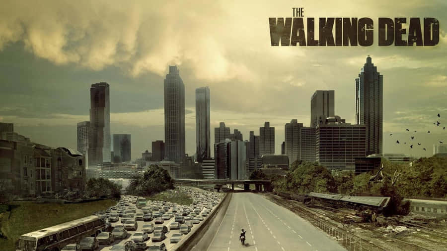
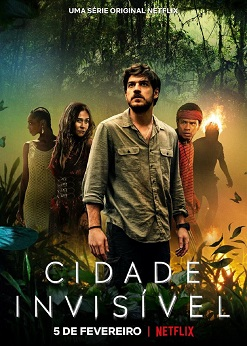
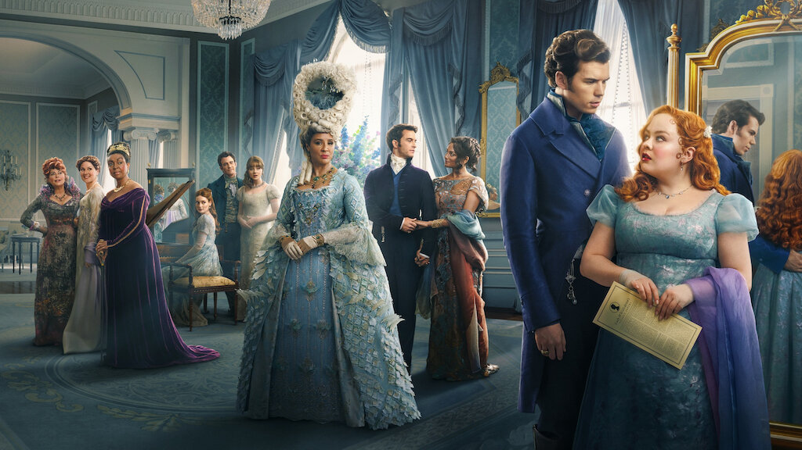

Disponível na Netflix
Stranger Things
Stranger Things é uma série de televisão via streaming estadunidense dos gêneros ficção científica, terror, suspense e drama adolescente, criada, escrita e dirigida pelos irmãos Matt e Ross Duffer para a plataforma Netflix. Os irmãos Duffer, Shawn Levy e Dan Cohen são também os produtores executivos.A série apresenta em seu elenco os nomes de Winona Ryder, David Harbour, Finn Wolfhard, Millie Bobby Brown, Gaten Matarazzo, Caleb McLaughlin, Noah Schnapp, Natalia Dyer, Charlie Heaton, Joe Keery, Cara Buono e Matthew Modine, enquanto Sadie Sink, Dacre Montgomery, Sean Astin, Paul Reiser, Maya Hawke, Priah Ferguson e Brett Gelmal foram incluídos no elenco em temporadas posteriores.
The Walking Dead

The Walking Dead é uma série de televisão dramática e pós-apocalíptica norte-americana, desenvolvida por Frank Darabont, e baseada na série em quadrinhos de mesmo nome de Robert Kirkman, Tony Moore e Charlie Adlard.
Asérie é uma produção original do canal AMC e é protagonizada por Andrew Lincoln como o vice-xerife Rick Grimes da primeira à nona temporada.Após a saída de Lincoln, a série passou a ser protagonizada pelos veteranos de elenco, Norman Reedus e Melissa McBride.
Outros membros do elenco de longa data incluem Steven Yeun, Chandler Riggs, Lauren Cohan, Danai Gurira, Josh McDermitt, Christian Serratos, Seth Gilliam e Ross Marquand.
Cidade Invisível

Cidade Invisível é uma série de televisão brasileira de fantasia criada por Carlos Saldanha baseada em uma história desenvolvida por Raphael Draccon e Carolina Munhóz e distribuída pela Netflix.
É estrelada por Marco Pigossi no papel de Eric, um policial ambiental que descobre um mundo oculto de entidades mitológicas do folclore brasileiro, enquanto busca uma conexão entre a morte de sua esposa e a misteriosa aparição de um boto-cor-de-rosa morto em uma praia do Rio de Janeiro.
Bridgerton

Bridgerton é uma série de televisão via streaming estadunidense criada por Chris Van Dusen para a Netflix. Baseada na série de livros de mesmo nome de Julia Quinn, é o primeiro programa roteirizado da Shondaland para a Netflix e estreou em 25 de dezembro de 2020.
A série se passa no início de 1800, em uma Londres alternativa à era da Regência, na qual o rei George III estabeleceu a igualdade racial e elevou muitas pessoas de ascendência africana à nobreza devido à herança africana de sua esposa, a rainha Charlotte.
O espectador é levado a observar a temporada social altamente competitiva, em que as nobres casamenteiras são introduzidas na sociedade. Em maio de 2023, um spin-off focado na rainha Charlotte foi lançado, chamado Queen Charlotte: A Bridgerton Story.